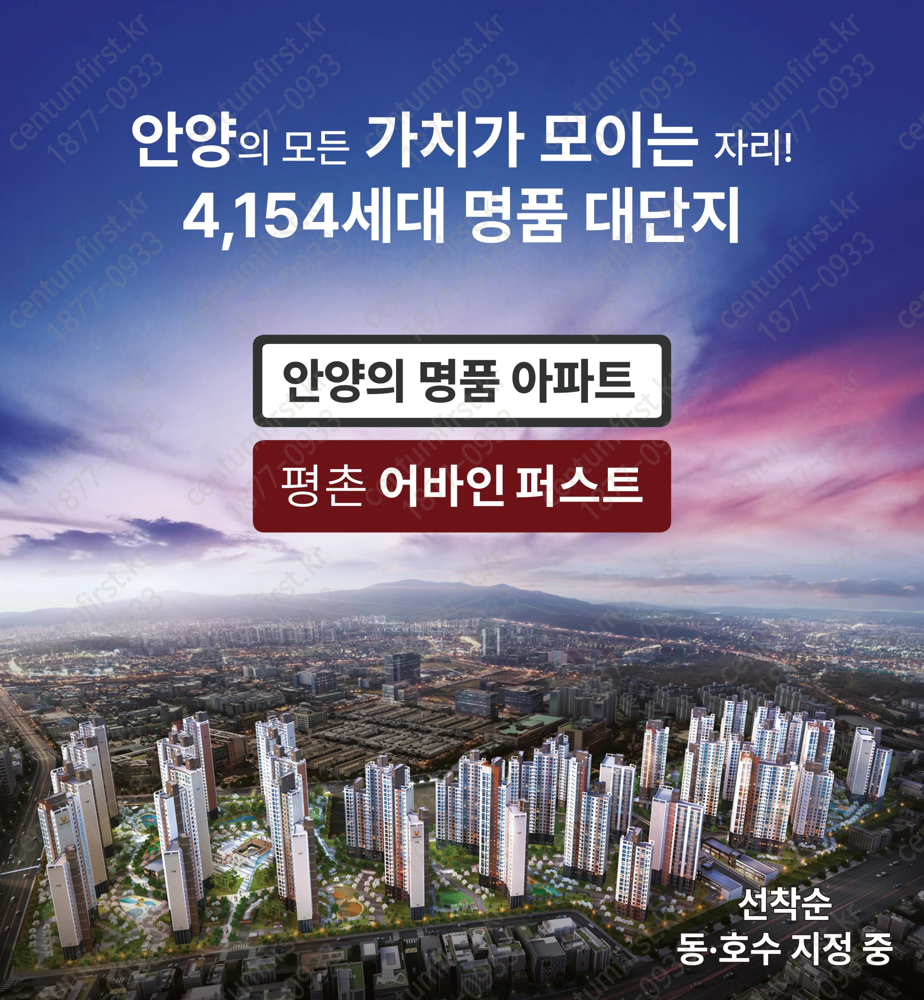
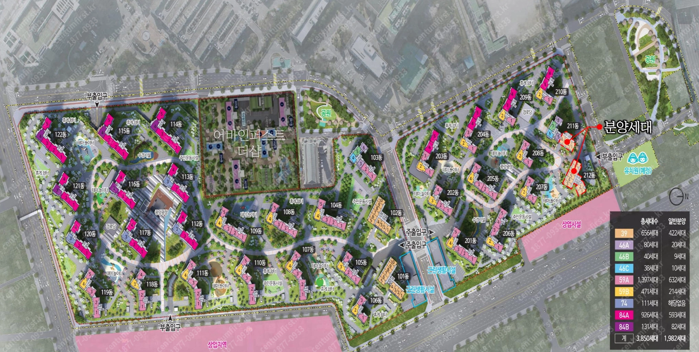

01Scale
4,154세대 대단지
1·2단지 3,850세대 + 3단지(더샵) 304세대. 포스코·SK·대우·현대 4사 컨소시엄. 안양 동안구 단일 단지 압도적 최대 규모로 인근 8,800세대 주거타운의 중심.
포스코·SK·대우·현대 4사 컨소시엄. 전국 5대 학원가 평촌의 권역. 2021년 입주 5년차의 신축 대단지가 안양 동안구의 새로운 중심을 정의합니다.
평촌은 학원가의 도시입니다.
어바인퍼스트는 그 학원가의 가장 가까운 신축 대단지입니다.
4,154세대 — 안양 동안구 단일 단지 1위.
평촌 권역의 어떤 단지도 동시에 갖추지 못한 네 가지 자산. 어바인퍼스트의 가치는 학원가·신축·대단지·교통 호재의 조합에서 나옵니다.
1·2단지 3,850세대 + 3단지(더샵) 304세대. 포스코·SK·대우·현대 4사 컨소시엄. 안양 동안구 단일 단지 압도적 최대 규모로 인근 8,800세대 주거타운의 중심.
광교·분당 학군 단지 대부분이 10년차 이상. 어바인퍼스트는 신축의 단지 인프라(석가산 조경·2층 커뮤니티시설)와 평면 효율을 모두 갖췄습니다.
학원만 280여 개. 대치동·목동·분당과 함께 수도권 4대 학원가. "안양의 대치동"으로 불리는 학원 메카가 단지 권역 안에. 학원 라이딩 부담이 줄어듭니다.
1·4호선 금정역 도보 10분. 인덕원~동탄선 호계사거리역 신설 예정, GTX-C 인근. 현재 + 미래 교통 호재가 동시에 진행.
1호선·4호선 환승역인 금정역까지 도보 10분. 인덕원~동탄선 호계사거리역 신설 예정으로 강남 접근성이 추가됩니다. GTX-C 본격 공사로 권역 전체 광역 접근성도 동반 강화.
4,154세대 자체 인프라 + 평촌·범계 상권의 시너지. 조경·커뮤니티·학원·의료가 단지 권역 안에 집약.
경기도 내 최고 수준 조경 단지로 업그레이드. 1~3층 외벽 고급 석종, 부출입구 대형 문주 추가.
단지 중앙부에 2층 규모 대형 커뮤니티. 피트니스·골프연습장·게스트하우스 등 신축 단지 풀세트.
"아이 키우기 좋은 단지"로 입주민 평가 1위. 놀이터가 많고 단지 구조가 가족 친화적.
대치동·목동·분당과 함께 수도권 4대 학원가. 학원만 280여 개. 학원가사거리부터 자유공원 사거리까지 약 400m.
경기도청 권역 상권. 백화점급 시설은 부재하나 F&B·로컬 상권 풍부.
안양·평촌 권역 종합병원. 광교 아주대병원과 비교하면 상급종합 등급은 낮으나 권역 의료 인프라는 충분.
1.16대/세대. 4,154세대 대단지치고 충분한 주차 확보. 지하 위주.
포스코건설(더샵) · SK건설(뷰) · 대우건설(푸르지오) · 현대건설(힐스테이트) 공동시공. 신뢰성 ↑.
도보·차량 권역의 도시공원. 평촌신도시 자유공원은 학원가와 연결된 산책 동선.
평촌 학원가는 전국 4대 학원가 중 하나. 학원 280여 개가 평촌대로 일대에 밀집. 단지에서 학원가 코어(귀인·신촌동)까지는 도보 부담이 있으나 차량 15분 내 접근.
왕복 4차선 도로 하나 두고 단지에서 매우 가까운 공립초. 어린 자녀 통학 안전성 강점.
호계동 위치 일반계 공립고. 학교 자체 진학률은 평촌 학원가 영향을 직접 반영하지는 않으며 평범한 수준.
평촌대로와 귀인로 교차 학원가사거리부터 약 400m 양 맞은편에 입시·선행·어학·논술 학원 280여 개 밀집. 원스톱 학원 라이딩 가능.
안양 동안구 평준화 추첨 권역. 자유공원 인근 명문 학군(귀인동·신촌동) 학교들도 권역 풀에 포함될 수 있음(추첨 기준).
인덕원~동탄선(인동선)이 호계사거리역 신설로 평촌 권역을 통과합니다. GTX-C 본격 공사도 진행 중. 어바인퍼스트는 두 노선 호재의 직접 수혜권에 있습니다.
3,850세대 입주 시작. 안양 동안구 단일 단지 최대 규모 등장.
304세대 추가 입주로 총 4,154세대 완성.
인덕원~동탄선 호계사거리역 신설 추진, GTX-C 중재 종료 후 본격 공사 단계. 두 노선의 동시 호재.
호계사거리역 신설로 단지 도보 권역에 지하철역 추가. 강남 접근성 본격 개선.
평촌신도시 재건축·리모델링 정비기본계획 진행 중. 권역 가치 동반 상승 가능성.
84㎡(34평) KB시세 9.6억. 광교 자연앤힐스테이트(17.8억) 대비 약 54% 가격으로 신축 + 학원가 권역을 확보할 수 있습니다.
모든 자산에는 그늘이 있습니다.
평촌어바인퍼스트도 완벽하지 않습니다.
매수 결정 전 반드시 알고 있어야 할 여섯 가지를 정리합니다.
'평촌'이라는 단지명에도 불구하고 행정구역상 평촌신도시 외곽인 호계동. 평촌 학원가 코어(귀인·신촌동)까지는 도보 부담이 있으며, 큰 도로(경수대로)를 건너야 합니다.
단지 인접 평촌고는 3.8등급(전국 상위 71%)으로 광교고(3.1) 등 신도시 명문에 비해 낮음. 학원가 효과는 "단지 진학률"이 아닌 "권역 학원 인프라"로 측정됨.
1·4호선 금정역에서 강남까지 환승 1회 필요(약 45분). 광교 자연앤힐스(신분당선 강남 직결 30분) 대비 강남 출퇴근 매력은 낮음. 인동선 개통 후 개선 예정이나 시점 불확실.
경수대로 등 6차선 도로 인접. 광교호수공원·산 같은 대형 자연자산이 단지 도보권에 부재. 안양천·자유공원은 일정 거리 있음.
포스코(더샵)·SK(뷰)·대우(푸르지오)·현대(힐스테이트) 공동시공. 신뢰성은 높으나 단일 브랜드 단지 대비 브랜드 가치 통합성·관리 일관성은 약할 수 있음.
57~115㎡ 다양한 평형(17~34평) 혼합 구성. 광교 자연앤힐스(33평 단일)와 달리 입주민 라이프스테이지 다양 → 커뮤니티 응집력은 상대적으로 약함.
분양전환 공식 자료의 단지 외관·조감도·야경·배치도. 4,154세대 대단지의 다양한 표정.




광교 가격의 절반으로 사는
신축 학원가 권역.
평촌어바인퍼스트는 광교의 대체재가 아닙니다.
"신축 + 학원가 + 가성비"를 동시에 사는 평촌 권역의 신표준입니다.